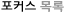
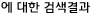
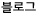

[##_issue_focus_##]
[##_category_focus_##]

[##_search_all_##][##_search_count_##]
[##_search_tag_##][##_search_count_##]
[##_search_blogtitle_##]
[##_search_blogdescription_##]
"[##_search_blogtitle_##]"[##_search_blogcount_##]
[##_search_date:Y년 m월 d일_##][##_search_count_##]
[##_search_category_##][##_search_count_##]
검색결과가 없습니다.
수집된 글이 없습니다.
-
[##_feeds_description_##]
[##_feeds_created_##] (최근 업데이트 : [##_feeds_lastupdate_##])